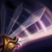

Thông tin tướng: Fiora
- Máu: 570 (+92)
- Hồi máu: 8.25 (+0.55)
- Năng lượng: 300 (+40)
- Hồi năng lượng: 8 (+0.7)
- Tầm đánh cân chiến: 150
- Sát thương vật lí: 60 (+3.3)
- Tốc độ đánh: 0.672 (+3.2%)
- Giáp: 27 (+3.5)
- Kháng phép: 32.1 (+1.25)
- Tốc độ di chuyển: 345
(Nội tại)
Fiora định vị những điểm yếu trong khả năng phòng thủ của mọi tướng địch gần kề. Mỗi điểm yếu cần 0.5 giây để định vị và tồn tại trong 15 giây. Sau khi một điểm yếu đã được đánh trúng hoặc hết thời gian hiệu lực, Fiora mới có thể định vị một điểm yếu mới.
Các đòn đánh thường và kĩ năng Phản Đòn trúng vào điểm yếu sẽ gây thêm sát thương chuẩn theo % máu tối đa của đối phương, đồng thời hồi máu cho Fiora và cho cô một lướng lớn tốc độ di chuyển giảm dần trong 1.75s.
(Kỹ năng Q)

Năng lượng tiêu hao: 20 / 25 / 30 / 35 / 40
Thời gian hồi: 16 / 14 / 12 / 10 / 8 giây
KÍCH HOẠT: Fiora lướt đi 1 đoạn ngắn theo hướng chỉ định, đâm kiếm vào 1 kẻ địch gần kề, gây sát thương vật lí và các hiệu ứng trên đòn đánh
Kĩ năng Lao Tới sẽ ưu tiên đánh vào các điểm yếu đã được định vị, các kẻ địch sẽ chết vì đòn đánh, và các kẻ địch gần nhất (ưu tiên tướng)
Thời gian hồi của Lao Tới sẽ giảm đi 60% nếu kĩ năng này đánh trúng 1 kẻ địch.
(Kỹ năng W)
Năng lượng tiêu hao: 50
Thời gian hồi: 19 / 18 / 17 / 16 / 15 giây
KÍCH HOẠT: Fiora thủ thế, chặn lại toàn bộ sát thương và các hiệu ứng khống chế cứng trong 0.75 giây. Sau khi chặn đòn, Fiora tấn công theo hướng chỉ định, gây sát thương phép lên các kẻ địch trên đường thẳng và làm chậm tướng địch đầu tiên trúng đòn trong 1.5 giây.
Nếu Phản Đòn chặn được bất kì hiệu ứng khống chế cứng nào, Fiora sẽ làm choáng tướng địch thay vì làm chậm.
(Kỹ năng E)
